These documents describe how to use 3D Forest application.
3D Forest Screenshot:
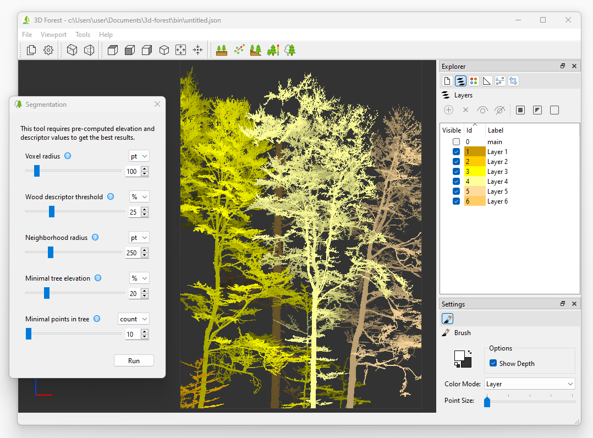
3D Forest application
Tools
Classification Tool
Classification Overview
Classification tool calculates classification of ground points. It uses new algorithm which is specialized to classify LiDAR point clouds of complex natural forest environments. The algorithm is based on global minimum to deal with missing data in non scanned or obstructed parts.
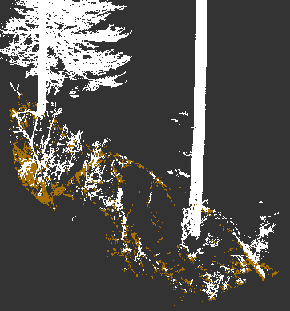
3D Forest Classification: Example dataset with classified ground.
Classification GUI
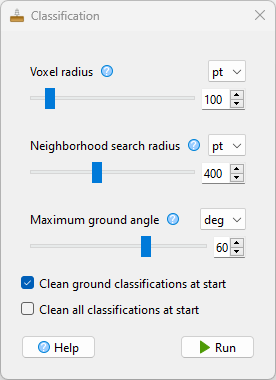
3D Forest Classification GUI
Ground Classification Algorithm
-
Voxelize the dataset.
-
Find voxel with minimal z coordinate and append this voxel to working set W.
-
While W is not processed, append other voxels in search radius from each new voxel in W, if selection cone given by maximal ground angle and their position does not contain any voxels, eg. there is nothing below. Voxel is marked as processed when it searched for its neighbors.
-
All voxels in W are classified as ground points.
-
Voxel values are applied back to the dataset.
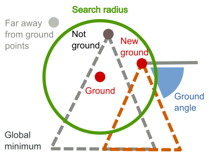
3D Forest Ground Classification Algorithm
Descriptor Tool
Descriptor Tool Overview
Descriptor tool calculates point descriptor values. Descriptors are calculated from 'Neighborhood Radius' of each point. The point cloud can be voxelized to speed up the calculation. There are several methods to choose from. Basic 'Density Method' calculates global density of each voxel. Calculated descriptors are normalized to range from zero (global minimum) to one (global maximum).
Descriptor is additional point attribute added by 3D Forest.
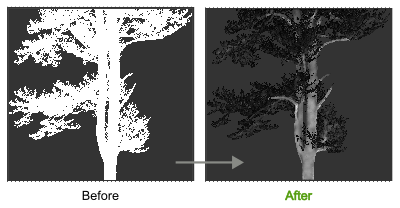
3D Forest Descriptor Tool: Example dataset (Before) with calculated density descriptors (After).
Descriptor Tool GUI
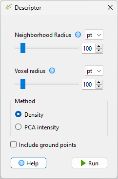
3D Forest Descriptor Tool GUI
Density Descriptor Algorithm
Count the number of points in 'Neighborhood Radius'.
PCA Intensity Descriptor Algorithm
Calculate PCA of points in 'Neighborhood Radius'. Descriptor value is ratio between length of longest projected eigen vector to sum of lengths of all projected eigen vectors.
Elevation Tool
Elevation Overview
Elevation tool calculates elevation of points above ground. It uses new algorithm which is specialized to classify LiDAR point clouds of complex natural forest environments. The algorithm uses 2D projection to deal with missing ground data in non scanned or obstructed parts. Elevation is additional point attribute added by 3D Forest.
Elevation tool requires pre-computed ground classification.
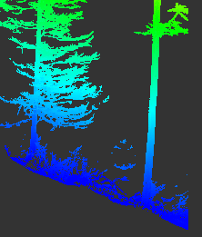
3D Forest Elevation Tool: Example dataset with calculated elevation.
Elevation Tool GUI
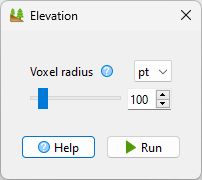
3D Forest Elevation Tool GUI
3D Point Elevation Algorithm Above Ground
-
Voxelize all ground points from the dataset.
-
Create 2D quad-tree spatial index from 3D voxels. Two dimensional quad-tree is created by ignoring z coordinates.
-
Iterate all non-ground points, use their (x, y) coordinates to find nearest neighbor in the ground quad-tree and set elevation as difference between z coordinates of nearest ground voxel and iterated point.
Automatic Segmentation Tool
Segmentation Overview
Segmentation tool identifies trees in point cloud. The basic idea of used segmentation algorithm is the same as in the original 3D Forest paper. The algorithm is based on point descriptors and connections between nearest neighbors. Both algorithms are specialized to classify LiDAR point clouds of complex natural forest environments.
Segmentation tool requires either pre-computed ground classification and point elevation values or to use enabled option 'Use z-coordinate instead of ground elevation'. Pre-computed descriptor values are always required.
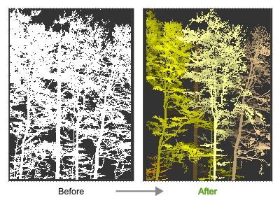
3D Forest Segmentation: Example dataset with calculated segmentation
Segmentation Steps
Segmentation steps are described on the image below.
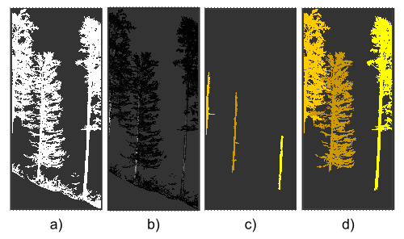
3D Forest Segmentation Steps: a) Original unsegmented dataset. b) Shows pre-calculated descriptors from black (low) to white (high). Descriptors with high value should describe trunks. c) Shows the effect of option 'Find only trunks'. 3 trunks are identified. d) Shows the final result of segmented dataset. Unsegmented (disconnected and ground) points are hidden. These points are assigned to main segment.
Segmentation GUI
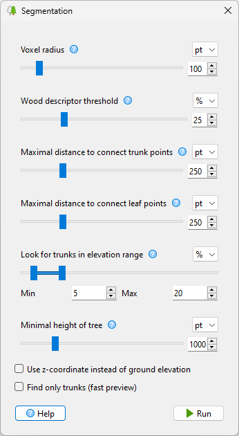
3D Forest Segmentation GUI
Tree Segmentation Algorithm
-
Voxelize the dataset.
-
Detect individual trunks by using search radius to connect voxels which have descriptor values above user provided threshold. Assign a unique segment value to each detected trunk.
-
Repeat the following for all remaining voxels:
-
Start at the next unprocessed voxel. The position of this voxel is random because the voxels are ordered by multi-layer octal-tree. This voxel creates new voxel group.
-
Find minimum spanning tree from this voxel until a voxel with existing segment value is reached. The spanning tree is calculated by iteratively appending the next nearest neighbor to the current voxel group.
-
Set segment value of all voxels in this voxel group to segment value from terminating voxel. This connects spanning trees to trunks. Connected voxels are marked as processed.
-
Segment values from voxels are applied back to the dataset.
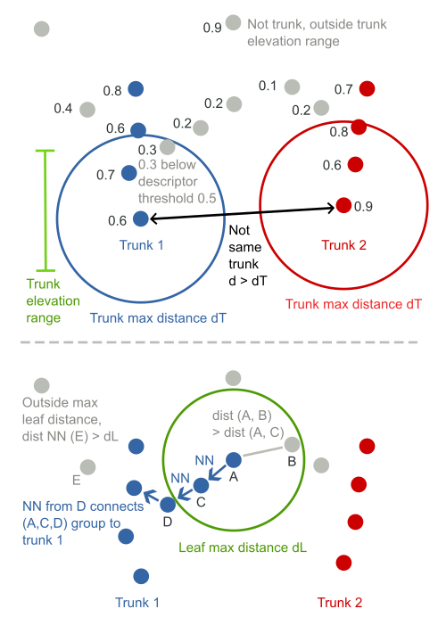
3D Forest Tree Segmentation Algorithm: Top: The first step is segmentation of trunks. 'Descriptor threshold' is set to 0.5 (50 %). Bottom: The second step is segmentation of leaves and small branches which are connected to some trunk.